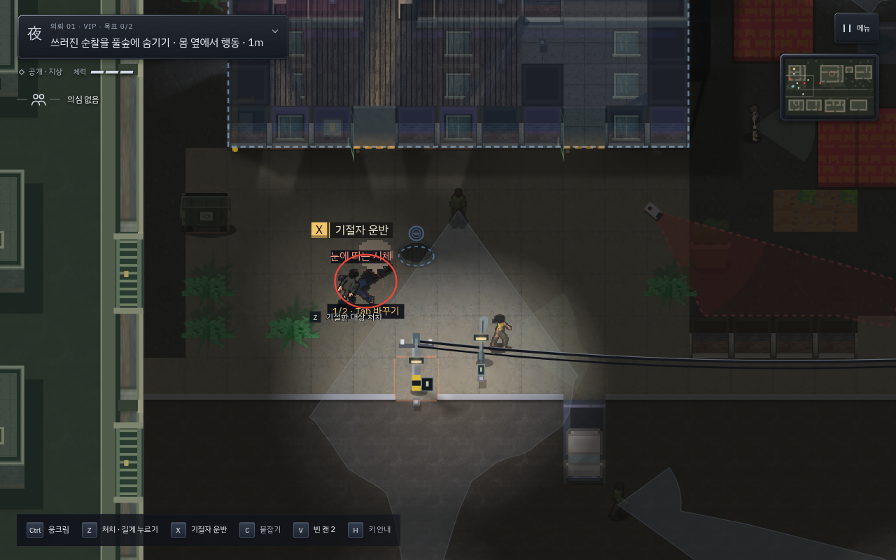
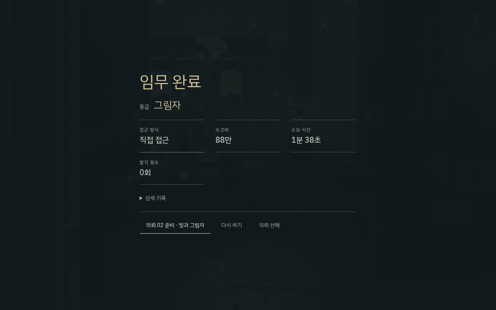
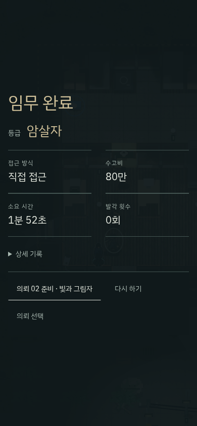

옷을 입으려는 상황에서도 ‘운반’이 먼저 선택됐습니다. 다시 내려놓고 갈아입기를 고르는 동안 정문 경비에게 들켜 작업이 중단됐습니다. 사무동에서는 미습득 조명이 비밀번호 입력을 가리고, 금고 경비가 출입구를 계속 막고 있었습니다.

| 실행 | 게임 시간 | 체력 | 발각 / 경보 / 몸 발견 | 등급 |
|---|---|---|---|---|
| PC 키보드 | 약 1분 39초 | 3/3 | 0 / 0 / 0 | 그림자 |
| 모바일 터치 | 약 1분 52초 | 3/3 | 0 / 1 / 1 | 암살자 |
두 실행 모두 기술 구매 0, 다트 사용 0, CCTV 전선 분리 2회입니다. 모바일은 표적의 몸이 발견되면서 경보가 발생했습니다. 첫 수동 입력 시도에서도 표적 처치 때 경보가 났으므로 모든 시도를 무경보 성공으로 기록하지 않습니다.


| 의뢰 | 주요 판단 | 설계 방향과 반영 범위 |
|---|---|---|
| 01 VIP | 관찰 · 제압 · 변장 · 은닉 | 한 명을 상대하고 정리한 뒤 정보·카메라·금고로 확장합니다. 이번에 배치와 자동 안내를 실제 수정하고 완주했습니다. |
| 02 대청소 | 두 표적 · 열쇠의 순서 · 층간 이동 | 수금원 → 창고 → VIP → 사무동의 단계별 계획. 공개 골목을 다시 관찰할 수 있는 완충 공간으로 씁니다. 기존 맵과 안내를 유지하고 공통 CCTV 선택지를 적용했습니다. |
| 03 배신 | 맨손 탈출 · 장비 회수의 선택 | 머리핀 → 간수 회피 → 2층 무전기 → 대체 출구. 장비 회수를 강제하지 않습니다. 기존 맵을 유지하고 장비 없이 CCTV를 다룰 수 있게 했습니다. |
첫 의뢰는 여전히 배울 규칙이 많습니다. 두 번째 카메라와 창문은 가까워 행동 목록에서 고를 필요가 있고, 모바일은 이동 시간이 길어져 순찰과 만나는 시점도 달라집니다. 다음 검토 대상은 02·03의 전체 무기술 완주, 실물 휴대폰에서의 선택 가독성, 정예의 복장 확인과 경보 전달 원인이 얼마나 명확히 보이는지입니다.